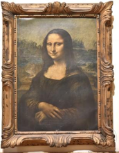

8. মোনালিসা

বিংশ শতাব্দীর শুরুর দিক (মূল চিত্রকর্মটি আনুমানিক ১৫০৩-০৬/১৭ সালের); ইতালির লিওনার্দো দা ভিঞ্চির একটি চিত্রকর্মের অনুলিপি।
এটি সোনালি রঙের প্রলেপযুক্ত কাঠের ফ্রেমে বাঁধানো মোনালিসার একটি চিত্রকর্ম। মোনালিসার প্রকৃত নাম 'লা জিওকন্ডা'; চিত্রটিতে তাঁকে সর্বদা মৃদু হাস্যে উদ্ভাসিত দেখা যায়।
এই ছবিটিতে মোনালিসা নামক এক নারীকে সর্বদা হাসিখুশি ভঙ্গিতে চিত্রিত করা হয়েছে। এর ইতালীয় নাম 'লা জিওকন্ডা' (La Gioconda) এবং ফরাসি নাম 'লা জোকন্ড' (La Joconde)—উভয়ের অর্থই হলো 'আনন্দময়ী'। সাদা লোম্বার্ডি পপলার কাঠের প্যানেলের ওপর তৈলরঙে আঁকা এই ছবিটি মূলত লিসা ঘেরার্দিনির প্রতিকৃতি বলে মনে করা হয়, যিনি ছিলেন ফ্লোরেন্সের ধনী রেশম ব্যবসায়ী ফ্রান্সেস্কো দেল জিওকন্ডোর স্ত্রী। ধারণা করা হয়, তাঁদের নতুন বাড়ির জন্য এবং দ্বিতীয় পুত্র আন্দ্রেয়ার জন্মের আনন্দ উদযাপনের উদ্দেশ্যে এই ছবিটি আঁকানোর ফরমাশ দেওয়া হয়েছিল।
এটি মোনালিসার একটি অর্ধ-দৈর্ঘ্যের প্রতিকৃতি, যা রেনেসাঁ যুগের শিল্পী লিওনার্দো দা ভিঞ্চির সর্বশ্রেষ্ঠ ও সর্বাধিক পরিচিত শিল্পকর্ম হিসেবে স্বীকৃত। বর্তমানে এটি প্যারিসের লুভর জাদুঘরে সংরক্ষিত আছে।
এই ছবিটিতে মোনালিসা নামক এক নারীকে সর্বদা হাসিখুশি ভঙ্গিতে চিত্রিত করা হয়েছে। এর ইতালীয় নাম 'লা জিওকন্ডা' (La Gioconda) এবং ফরাসি নাম 'লা জোকন্ড' (La Joconde)—উভয়ের অর্থই হলো 'আনন্দময়ী'। সাদা লোম্বার্ডি পপলার কাঠের প্যানেলের ওপর তৈলরঙে আঁকা এই ছবিটি মূলত লিসা ঘেরার্দিনির প্রতিকৃতি বলে মনে করা হয়, যিনি ছিলেন ফ্লোরেন্সের ধনী রেশম ব্যবসায়ী ফ্রান্সেস্কো দেল জিওকন্ডোর স্ত্রী। ধারণা করা হয়, তাঁদের নতুন বাড়ির জন্য এবং দ্বিতীয় পুত্র আন্দ্রেয়ার জন্মের আনন্দ উদযাপনের উদ্দেশ্যে এই ছবিটি আঁকানোর ফরমাশ দেওয়া হয়েছিল।
এটি মোনালিসার একটি অর্ধ-দৈর্ঘ্যের প্রতিকৃতি, যা রেনেসাঁ যুগের শিল্পী লিওনার্দো দা ভিঞ্চির সর্বশ্রেষ্ঠ ও সর্বাধিক পরিচিত শিল্পকর্ম হিসেবে স্বীকৃত। বর্তমানে এটি প্যারিসের লুভর জাদুঘরে সংরক্ষিত আছে।